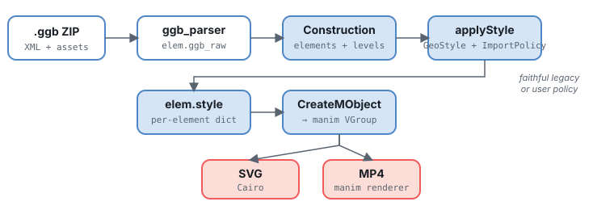
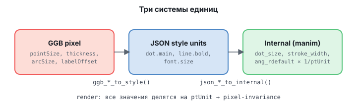

§9 · Экспорт: все форматы
Одна и та же сцена выводится в четыре статических формата и пять видео/растровых.
Векторная дорожка (exportSVG/PDF/EPS + exportTikZ) строит
картинку один раз и сериализует её; render-дорожка прогоняет manim-рендерер и даёт
PNG/GIF/MP4/WebM/MOV. Для интерактивных подвижных чертежей в web есть отдельный
путь — JSXGraph-экспорт.
Визуальные размеры pixel-invariant: чертёж выглядит одинаково в 480×320 и 4K.
Две дорожки экспорта

| Статическая дорожка | Render-дорожка | |
|---|---|---|
| Форматы | SVG · PDF · EPS · TikZ | PNG · GIF · MP4 · WebM · MOV |
| Как строится | конструкция строится один раз, затем сериализуется | manim-рендерер прогоняет кадры (self.play(...)) |
| Метод / запуск | scene.exportSVG/PDF/EPS/TikZ(path) | configure_render(...) + manim CLI |
| Анимация | нет (один кадр) | да (keyframes / self.play) |
| Время | 10–150 мс | секунды–минуты |
Какой формат выбрать
| Цель | Формат |
|---|---|
LaTeX \includegraphics, журналы, печать | PDF (или EPS для EPS-only процессов) |
| Web, Inkscape, редактирование | SVG |
| Нативная LaTeX-фигура (редактируемая, настоящие LaTeX-подписи) | TikZ |
| Интерактивный web-виджет (драг точек/слайдеров) | JSXGraph (.html / spec) — см. §reference |
| Универсальная анимация (чат, слайды, README) | GIF |
| Лёгкое web-видео / прозрачное видео | WebM / MOV |
| Максимальная совместимость видео | MP4 |
| Быстрый растровый превью, вставка в Office/Docs | PNG |
Векторные: SVG / PDF / EPS
Все три используют один и тот же Cairo-обход (идентичный вид), отличается только cairo-surface. Самый быстрый путь:
scene.loadGGB("scene.ggb", style="style.json", px_size=[800, 600])
scene.exportSVG("figure.svg") # вектор, для web/редактирования
scene.exportPDF("figure.pdf") # вектор, одна страница, для LaTeX/печати
scene.exportEPS("figure.eps") # Encapsulated PostScript
scene.exportPDF("figure.pdf", dpi=150) # плотнее: меньше физическая страница- dpi (по умолчанию
96) задаёт физический размер страницы PDF/EPS. SVG меряется в пикселях, PDF/EPS — в PostScript-точках (1/72"), так что пиксель →72/dpipt. Фигура остаётся векторной; в LaTeX масштабируется через\includegraphics[width=\linewidth]{figure.pdf}. - Текст — это контуры, а не выделяемый текст: подписи рендерятся как Безье-кривые (как и SVG-path). Для печати — норма; не ищется поиском.
- EPS не поддерживает прозрачность: полупрозрачные заливки/обводки флэттенятся (растеризуются) cairo, что раздувает файл и смягчает края (логируется предупреждение). Для прозрачности используйте PDF или SVG.
Что происходит внутри SVG
exportSVG(path)открывает Cairo SVG-context на файл.- Обходит все
Mobject-члены сцены. - Перекладывает path-data из manim-VMobject в Cairo-path и пишет XML.
Никаких ValueTracker'ов и play-циклов — только статическая геометрия (финальное
состояние, если в construct были self.play(...)).
TikZ для LaTeX
exportTikZ — это семантический TikZ: обходит элементы
в z-порядке и выдаёт нативные примитивы (\draw circle/ellipse/(a)--(b)/arc/[->]),
настоящие LaTeX-\node подписи и \draw plot coordinates
для сэмплированных кривых. Читает тот же style-resolver, что и рендерер.
scene.exportTikZ("figure.tex") # сниппет для \input{}
scene.exportTikZ("figure.tex", standalone=True) # компилируемый документ- Сниппет по умолчанию (для
\input{});standalone=Trueоборачивает в\documentclass{standalone}с Cyrillic-ready преамбулой. - Координаты — math-units; единица картинки
x=/y=повторяет физический размер SVG, а fixed-size вещи (маркеры/толщины/шрифты) — в абсолютныхpt. - Цвета интернятся в
\definecolor; переносятся прозрачности, dash-паттерны, торцы линий, штрихи, авто-радиус дуг, формы точек, z-порядок.
TikZOptions
(см. §reference).
Render: PNG / GIF / MP4 / WebM / MOV
Контейнер выбирается через configure_render до рендера
(manim читает его на этапе настройки сцены):
from animageo import configure_render
configure_render(format="gif", fps=20) # или "mp4" (по умолч.), "webm", "mov", "png"
class MyScene(AnimaGeoScene):
def construct(self):
self.loadGGB("scene.ggb", style="style.json", px_size=[800, 600])
self.play_keyframes(keyframes_json)| Контейнер | Прозрачность | Заметки |
|---|---|---|
mp4 | нет | универсальное видео по умолчанию |
gif | 1-бит | универсальный, но 256-цветная палитра → бандинг на градиентах |
webm | alpha | маленькое, современное web-видео |
mov | alpha | видео с альфой |
png | alpha | один кадр (последний) |
Для градиентов/сглаженных заливок с прозрачным фоном предпочитайте
webm или mov, а не gif.
CLI: один файл — один формат
Формат выводится из расширения -o (или задаётся --format):
$ python -m animageo scene.ggb -o figure.svg # SVG
$ python -m animageo scene.ggb -o figure.pdf # PDF (вектор)
$ python -m animageo scene.ggb -o figure.eps --dpi 150
$ python -m animageo scene.ggb -o figure.tex --standalone # TikZ
$ python -m animageo scene.ggb -o board.html # интерактивный JSXGraph
$ python -m animageo scene.ggb -o board.json --format jsxgraph # spec (данные)
# render-дорожка
$ python -m animageo scene.ggb -o frame.png # один кадр
$ python -m animageo scene.ggb -o anim.gif --keyframes keys.json --fps 15
$ python -m animageo scene.ggb -o anim.webm --keyframes keys.json --transparent
$ python -m animageo scene.ggb --format mp4 -o anim.mp4 --keyframes keys.json--keyframes file.json— keyframe-последовательность (формат как уplay_keyframes); без неё рендерится один кадр.--quality {l,m,h,p,k}— пресет разрешения/fps render-дорожки (l=854×480@15 …k=3840×2160@60).--fps,--transparent— проброс в manim.
Полная таблица флагов — §reference · CLI.
px_size и ptUnit
Две связанные величины задают «визуальный масштаб» сцены.
| Что | Где задаётся | Что определяет |
|---|---|---|
px_size = [width, height] | applyStyle(px_size=[800, 600]) | Размер выходного холста в пикселях. |
ptUnit | Автоматически из px_size: ptUnit = width / 2 / xmax | Сколько пикселей в одной manim-MU по ширине. |
xmax, ymax | Из px_size и aspect ratio | Границы видимой сцены в математических координатах. |
Если задать px_size=[800, 600], то ptUnit = 800/2/10 = 40
(при стандартном xmax=10): 1 math-unit = 40 px, точка с size_px=5 = 5-пиксельный диск.
Явный контроль ptUnit
scene.style.export['ptUnit'] = 40 # 40 px / MU
scene.style.export['ptWidth'] = 800
scene.style.export['ptHeight'] = 600
scene.style.export['ptXZero'] = 400 # координата 0 по X в пикселях
scene.style.export['ptYZero'] = 300
scene.applyStyle(style_file='s.json', px_size=[800, 600])Reference canvas и export canvas
px_size — старый режим: задаёт размер холста и пересчитывает
ptUnit так, что визуальные *_px остаются теми же пикселями.
Для увеличения маленького чертежа до большого выходного файла используйте
отдельный export-layout:
self.loadGGB(
'construction.ggb',
style_file='style.json',
reference_size=[300, 220],
export_size=[1920, 1080],
export_fit='contain',
export_source_rect='ggb_view',
)| Параметр | Смысл |
|---|---|
reference_size | Эталонный холст, под который рассчитан стиль. |
export_size | Физический размер итогового SVG/MP4. |
export_fit | contain, cover, width, height, none или manual. |
export_scale | Коэффициент для export_fit='manual'. |
export_anchor / export_offset | Куда прижать reference-холст и доп. сдвиг в пикселях. |
export_source_rect | ggb_view (viewport GGB) или rendered_bounds (двухпроходный layout по измеренным объектам). |
export_infinite_policy | clip или ignore для линий/лучей в rendered_bounds. |
Внутри появляются две шкалы: ptUnit_style для визуальных размеров
стиля и ptUnit для финального SVG/camera transform. Поэтому линии,
точки, подписи и дуги масштабируются вместе с картинкой, а не остаются мелкими
на большом холсте.
Pixel-invariance

Главный принцип AnimaGeo: все визуальные размеры (радиус точки, толщина линии,
шрифт, дуга угла, offset подписи) хранятся в пикселях. В legacy-режиме
делятся на ptUnit; в новом export-layout — на ptUnit_style.
# pixel-invariant
size_px = 5 # → радиус в пикселях = 5 (всегда)
stroke_width_px = 1.5 # → толщина в пикселях = 1.5
font_size_px = 14 # → 14 px шрифт
arc_size_px = 22 # → дуга 22 px
label_offset_px = [12, -8] # → сдвиг 12 px вправо, 8 px вниз
# НЕ pixel-invariant
Point(3, 2) # координаты в math-units
Circle(O, 2) # радиус 2 math-unit (в пикселях зависит от px_size)
Segment(A, B) # длина в math-unitsCircle(O, 2) в 800×600 даст радиус
2 × ptUnit = 80 px, а в 400×300 — 40 px. Чтобы окружность
была pixel-invariant, задавайте её через точку на окружности:
Circle(O, P), где P — Point(2, 0).
Retina 2× / 3×
Для retina и печати в 2× рендерите в большем разрешении. Чтобы увеличить всю
картинку целиком — reference_size/export_size из раздела выше. Чтобы
сохранить те же пиксельные толщины — legacy-путь через px_size.
Legacy: rendering.scale_export
"rendering": { "scale_export": 2 }Множитель: px_size и ptUnit удваиваются автоматически.
SVG / MP4 + retina
SVG векторный — он сам scalable, retina-hack обычно не нужен. Для MP4
--quality h уже даёт 1920×1080; для печати — k (4K).
При export_size выставляйте config.pixel_width/height в тот
же физический размер.
Troubleshooting
SVG/PDF — «фигура вышла за край»
Координаты вышли за xmax/ymax. Подвиньте к центру или
задайте scene.style.export['xmax']=15.
EPS — «файл огромный и края мутные»
EPS флэттенит прозрачность в растр. Используйте PDF или SVG, если есть полупрозрачные заливки.
MP4 — «чёрный экран»
Не вызван addAllGeometry(show=True) или объекты visible=False.
MP4 — «подписи не следуют за геометрией»
autoPlaceLabels(dynamic=True) + addUpdater, или
keyframe_snapshots=true + play_keyframes.
TikZ — «не компилируется»
Используйте standalone=True для самостоятельного документа, или
убедитесь, что в основном документе подключены нужные пакеты (Cyrillic-преамбула
есть только в standalone-режиме).